Conectate a la red de voluntarios. No se requiere experiencia avanzada, solo voluntad de ensamblar.

Bienvenido a la red. Tu perfil técnico ha sido registrado en nuestra base de datos. Pronto recibirás las coordenadas de ensamblaje.